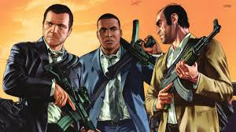

n tegenstelling tot de voorgaande spellen in de Grand Theft Auto-reeks bevat GTA V drie personages die bestuurd kunnen worden door de speler: Michael De Santa, (voorheen bekend als Michael Townley), Trevor Philips, en Franklin Clinton. Tussen missies door kan tussen deze drie protagonisten worden gewisseld, evenals op sommige momenten tijdens specifieke missies.
Elk personage heeft een eigen specialisatie die de gameplay beïnvloedt. Zo kan Trevor een staat van razernij activeren waarin hij meer schade toedient en minder schade krijgt; Michael kan tijdens schietpartijen tijd vertragen voor betere accuratesse (een soort bullettime, beter bekend van Max Payne 3) en Franklin kan tijd vertragen tijdens het rijden. Elk van deze vaardigheden kan maar met mate gebruikt worden en wordt opgeladen wanneer het niet in gebruik is.
